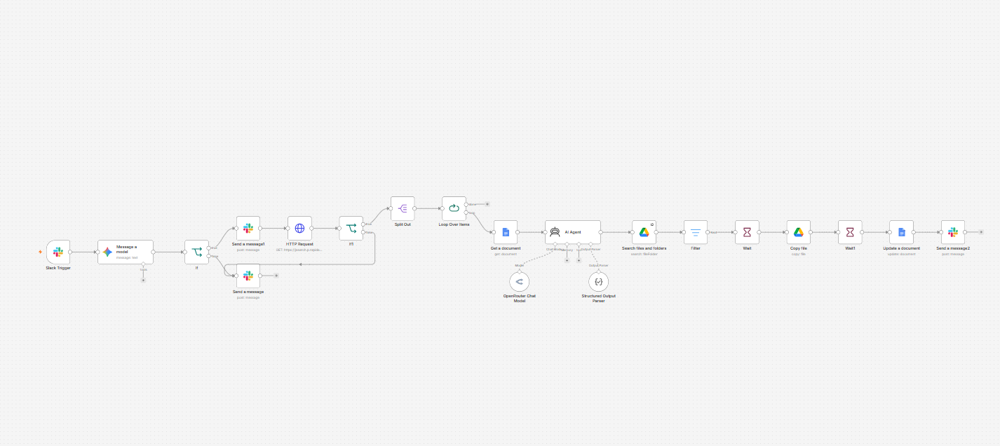
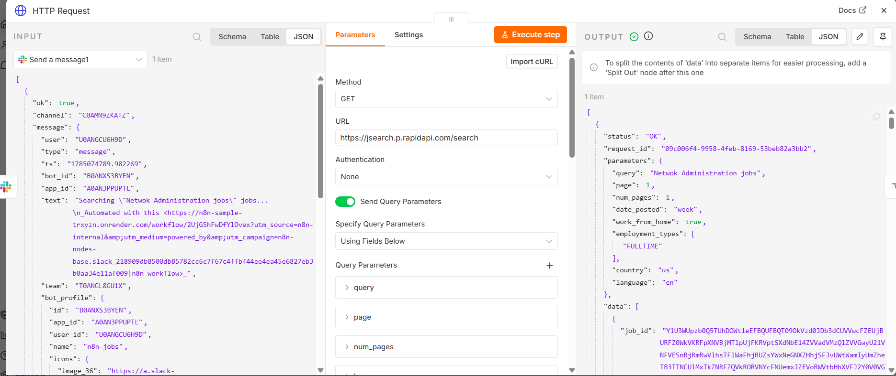
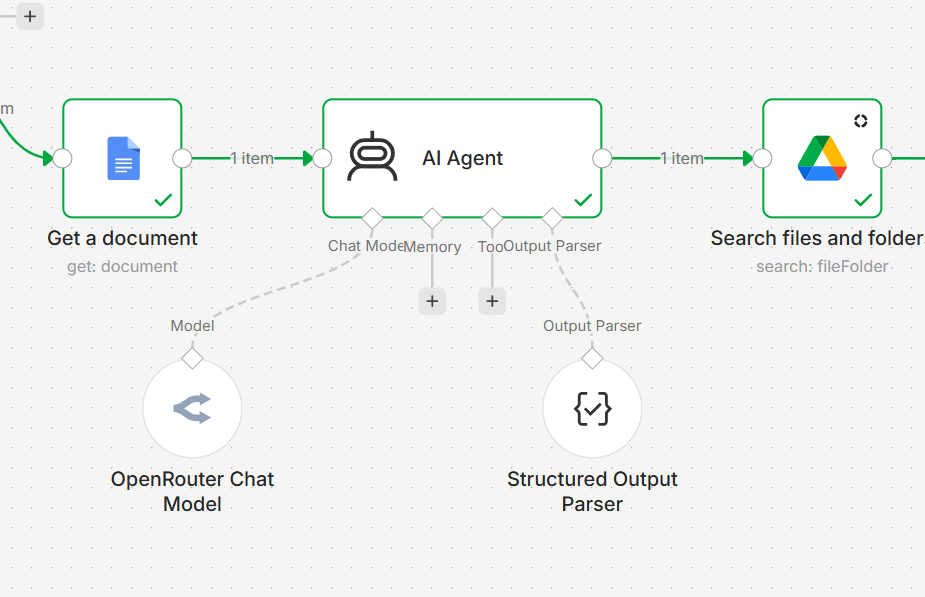
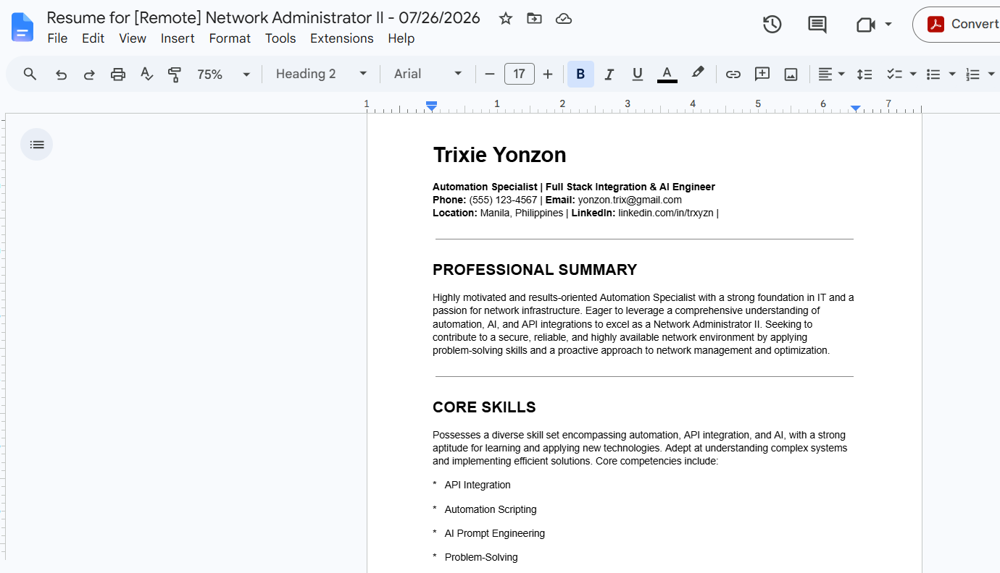
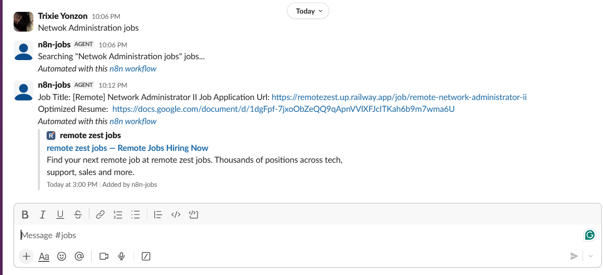

AI Job Scraper + Resume Optimizer
An AI-powered workflow that automates job discovery, job description analysis, resume optimization, and result delivery. The system uses Slack as the trigger, retrieves job data, processes job descriptions with an AI agent, updates a resume document, and sends the optimized output back to Slack.
Overview
This project automates the job application preparation process by combining web scraping, AI analysis, resume tailoring, and document automation. It helps users quickly identify relevant job opportunities and generate a more targeted resume based on the requirements of each job post.
Project Information
Automation Developer
AI Workflow Designer
AI Automation System
Career Productivity Tool
Technologies & Tools
Challenges & Solutions
Automating Job Data Collection
Challenge: Job post information needed to be collected and processed without manually copying descriptions from multiple sources.
Solution: Built an automated scraping workflow using HTTP requests and loop processing to retrieve and organize job post data.
Matching Resume Content to Job Requirements
Challenge: Generic resumes often fail to highlight the most relevant skills for each specific job posting.
Solution: Used an AI agent to analyze job descriptions and generate targeted resume improvements based on role requirements.
Automated Document Updating
Challenge: Resume updates needed to be saved into a usable document format without manual formatting.
Solution: Connected Google Drive and Google Docs to copy, update, and store optimized resume versions automatically.
Architecture & System Design

User sends a command or message to start the job scraping workflow.

HTTP request retrieves job post data and loops through available listings.

AI agent analyzes the job description and creates tailored resume improvements.

Optimized resume content is copied, updated, and saved as a new document.

The workflow sends the final document or result back to Slack.